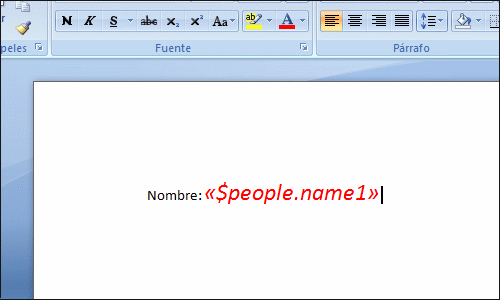

SleDoc le da la capacidad de crear reportes sencillos usando las aplicaciones MS Word o OppeOffice Writer.
Con las aplicaciones mencionadas, Ud. Podrá crear reportes bases o plantillas con su imagen corporativa que luego serán combinadas con los datos actuales de la nomina para generar documentos de forma sencilla, sin necesidad de adiestramiento extenso o personal especializado en estas operaciones.
Esta pagina, le dara un recorrido por las operaciones básicas para que pueda crear reportes usando SlDoc usando como herramienta MS Word.
Topicos a tratar
Esta sección explica como añadir la variable Primer nombre ($people.name1 ) después del texto Nombre:. Para hacer esto:
Coloque el cursor donde desea añadir la variable y presione Ctrl+F9
Ms Word generara un {}. Selecciónelo y presione clic derecho para abrir menú emergente. Seleccione editar campo.
Esta acción abrirá el dialogo Campos. Seleccione MergeField en la lista Nombre de campos. Luego coloque en nombre de la variable $people.name1 en el campo de entrada Nombre de campo. Presione Aceptar.
La variable ha sido creada.
Esta puede ser formateada en el estilo que desee. Para ello, selecciónela y formatee al gusto.
Esta sección explica como adicionar el sello digital dentro de su plantilla MS Word. Estos son los pasos:
Valla al menú Insertar/imagen
Esta acción abre el dialogo para seleccionar una imagen. Puede seleccionar cualquier imagen. En este caso, una imagen de muestra.

Después de insertar la imagen, debe darle un nombre. Para hacer esto seleccione la imagen y seleccione insertar/marcador.
Esta acción abrirá el dialogo marcador. Coloque digitalSign en el campo nombre del marcador. Presione Agregar.
Puede adicionar bordes u otros detalles, excepto efectos que distorsionen la imagen ya que es posible que no pueda ser reconocida por los dispositivos ópticos.

Esta sección le explicara como configurar una plantilla en SleDoc. El objetivo de estos pasos es dar a conocer a la aplicación cuales son los documentos disponibles para ser combinados con los datos de la base de datos y así, generar un documento válido. Para hacer eso, iniciamos la aplicación. Luego de ingresar el usuario y la contraseña, seleccione el menú SleDoc/Documentos.
Esta acción abrirá el dialogo de documentos. Presione Nuevo para adicionar una plantilla. Presione el botón que aparece luego del texto Documento *. Esta acción abrirá una ventana que le permitirá seleccionar el documento a ingresar. Luego coloque una descripción de la función del documento. Presione Aceptar.
Una vez adicionado el documento, puede asociarle firmas (Personas que deben firmar el documento) y los acumuladores que serán tomados en cuenta al momento de la generación del reporte.
Con estos pasos ya esta incorporada la plantilla Test Document.docx dentro de la aplicación y esta lista para ser usada. El documento original puede ser modificado o suprimido. Para la aplicación, la versión valida es la cargada dentro de la base de datos.
La acción de combinar documentos es la que realmente la sustitución de las variables configuradas dentro de la plantilla con los datos de la nomina. Para hacer esto:
Seleccione el trabajador al que se desea generar un documento y luego presione Combinar.
Esto abrirá el dialogo Combinar. Seleccione los parámetros adicionales para la generación y presione Aceptar.
Esta acción iniciara la generación del documento que sustituirá las variables dentro de la plantilla por los valores actuales. Una vez terminado este proceso, se guardara una copia dentro de la base de datos para futuras referencias. Según el parámetro seleccionado, el documento puede ser enviado a la impresora por omisión, exportado a un archivo o se puede ver por pantalla. Las siguientes imágenes muestran un fragmento de la plantilla creada en MS Word y el documento generado en PDF.
Plantilla MS Word.
Documento Generado.
A continuación se presentan las variables disponibles dentro de la aplicación y que pueden ser usadas dentro de la plantilla. Estas serán reemplazadas por el valor actual durante la combinación del documento.
Variables que representan parámetros generales. Generadas al momento de imprimir el documento
Firmantes configurados dentro del documento. El primero en ser creado será identificado como “a”, el segundo como “b” y así sucesivamente. Debe existir una correspondencia entre el número de firmantes dentro del documento y los firmantes configurados dentro de la aplicación.
Variables que describen los datos de la compañía con la cual, se combina el documento.
Variables que describen los datos básicos del colaborador al cual se le esta emitiendo este documento.
Acumuladores asociados a la fecha de impresión de documento. El nombre de la variable es construido según el identificador de acumulador. Ej. Si se encuentra el acumulador 0001 el nombre de la variable será cumMonth00001.amount. Siguiendo el mismo ejemplo. Los acumuladores mensuales y anuales serán:
Al igual que los acumuladores. El nombre de la variable es construido según el tipo de salario. Ej. Si se encuentra el tipo de salario 6 el nombre de la variables será salary_6_amount_daily. Siguiendo el mismo ejemplo, los nombres de variables serán: